强大的处理文本的工具sed
我们知道，sed被称为Linux中被称为文本处理三剑客之一，相比于grep命令匹配内容的功能，sed则能够做到对匹配到的文本内容对其进行编辑。
Linux文本处理三剑客简介：
grep：文本过滤工具
sed：文本编辑工具
awk：Linux上的实现gawk，文本报告生成器
sed用法：
sed[option]…’script’ inputfile…
其中‘script’可表示为’地址定界+编辑命令’
option：
1 | -n 取消默认打印内容到屏幕 |
地址定界：
不给地址：对全文进行处理
单地址：
#：指定的行，$：最后一行
/pattern/：支持正则表达式，被此模式所能匹配到的每一行
地址范围：
#，#
#，+#
/pat1/,/pat2/
/pat1/, #
~：步进
1~2 奇数行
2~2 偶数行
编辑命令：
1 | d 删除模式空间匹配的行 |
示例
以下我们创建文件test进行示例：
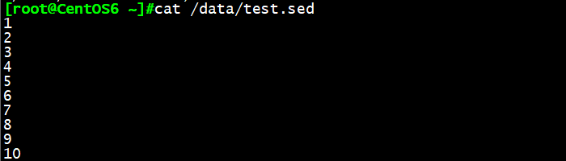
示例1：sed ‘1,10p’ /data/test.sed
sed命令默认将文本内容打印到屏幕，由于执行命令p，文本内容被打印了两遍
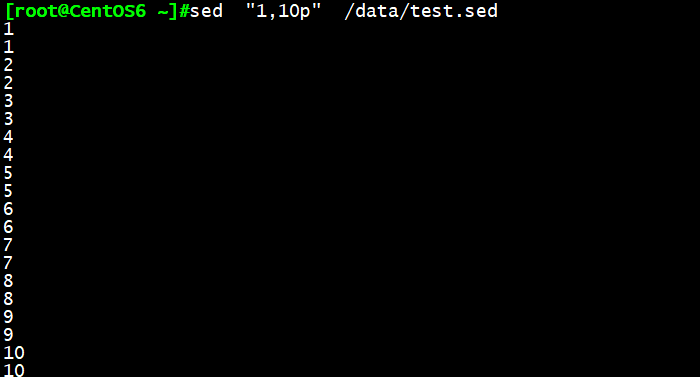
sed -n ‘1,10p’ /data/test.sed
sed -n选项将取消默认输出到屏幕，仅显示p的执行结果
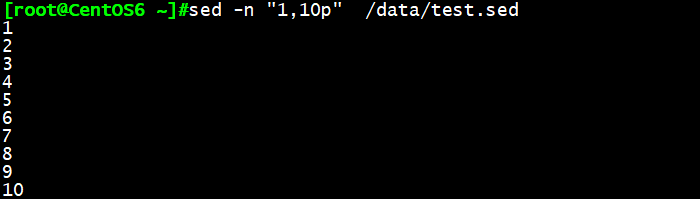
示例2：sed -n -e ‘1p’ -e ‘3p’
显示第一行和第三行，-e表示且的关系
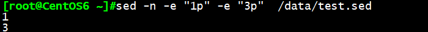
示例3：sed -n -f sedscripts.txt /data/test.sed
将2,5p写入sedscripts.txt文件，-f选项读取sedscripts.txt，并执行文件中内容
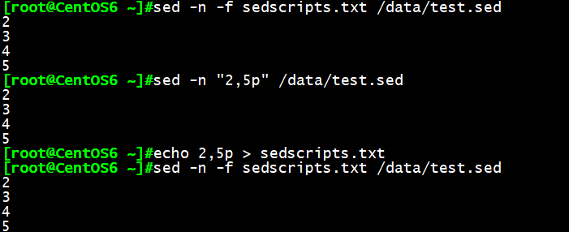
示例4：sed -i ‘1,10a#’ /data/test.sed
表示在第1至第10行内容后插入#，-i选项直接编辑了test.sed的文本内容
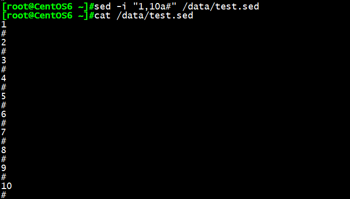
sed -i ‘/#/d’ /data/test.sed
表示将所有带#的行删掉并编辑文本
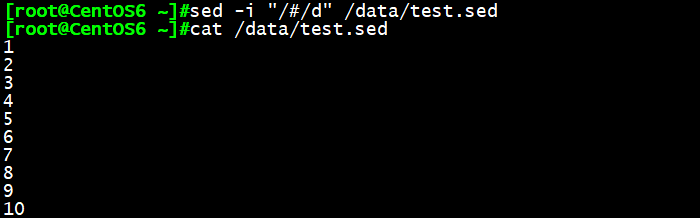
示例5：sed -n ‘3p’ 打印第3行内容
sed -n ‘2,5p’ 打印第2至第五行
sed -n ‘2,+3p’ 打印第2至第5行
sed -n ‘1~2p’ 打印奇数行
sed -n ‘2~2p’ 打印偶数行
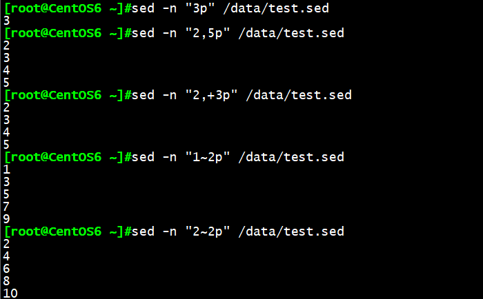
示例6：正则定界，表示ifconfig命令输出中开头eth2的行，至开头为lo的行
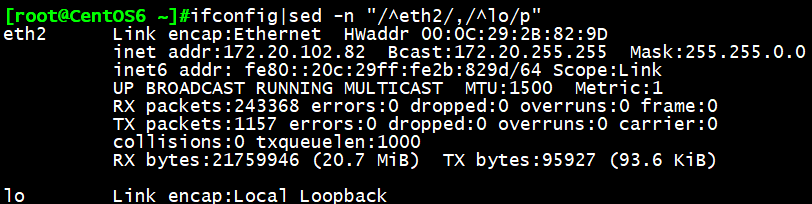
示例7：正则数字混合定界，表示ifconfig命令输出中，eth2开头的行到第12行的内容
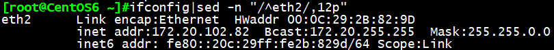
示例8：多行插入，将aaa\nbbb插入到每行后面
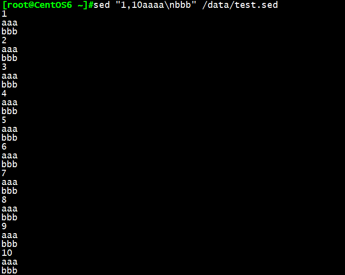
示例9：sed ‘1,10i#’ /data/test.sed
在每一行上面插入#
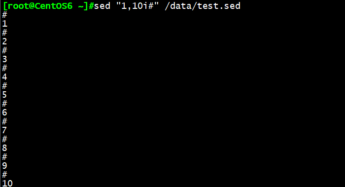
示例10：sed ‘1,5c’ /data/test.sed
将test.sed文件中1到5行替换为一个#
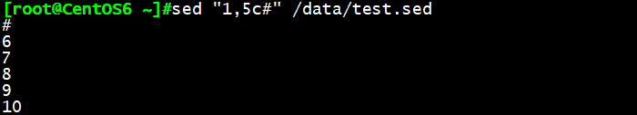
示例11：sed ‘2,5w f1’ /data/test.sed
将test.sed文件中第2到第5行内容打印到f1文件中
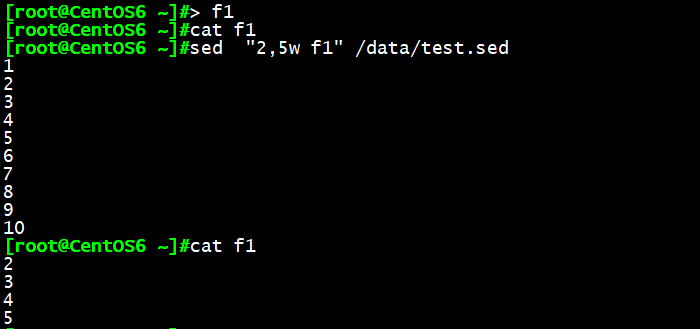
示例12：sed ‘2,5r f1’ /data/test.sed
将f1的内容插入到第2至第5行
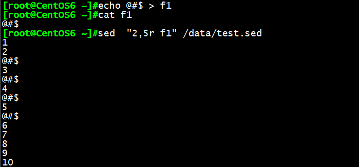
示例13：sed -n ‘2,5! p’ /data/test.sed
打印除了第2至第5行的内容
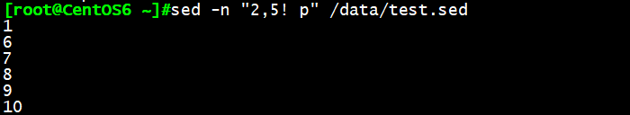
示例14：ifconfig |sed -n “2p”|sed -r “s@.addr:(.) Bcast.*@\1@”
利用搜索替代，我们可以将任意段字符串定义成方法，然后表示出整行，再利用后向引用即可取出该字符串。
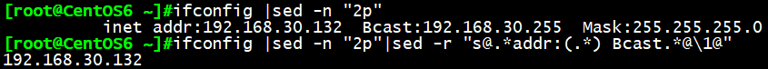